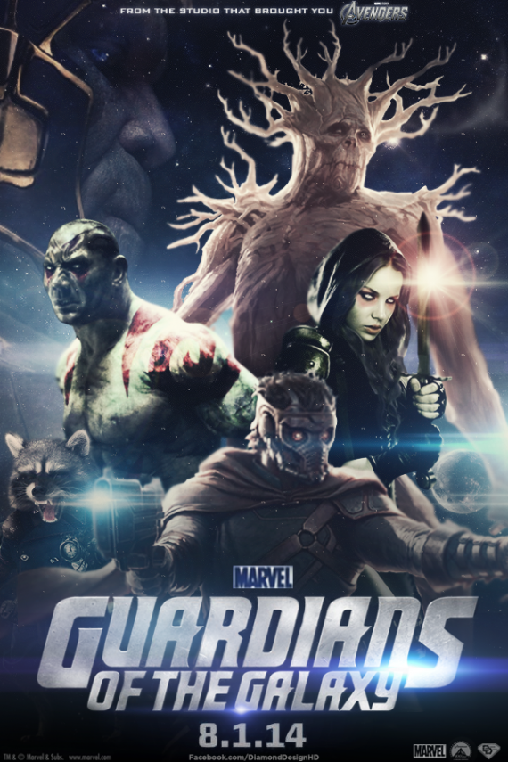
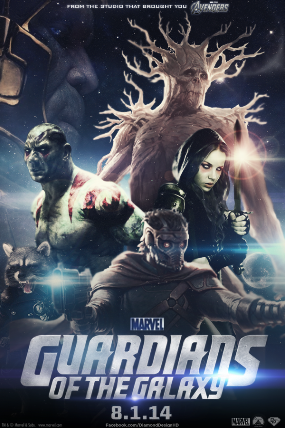

AVENGERS ERA DE ULTRON
Sinopsis
Cuando Tony Stark intenta reiniciar un programa para mantener la paz, las cosas salen mal y los héroes más poderosos de la Tierra —incluidos Iron Man, Capitán América, Thor, Hulk, Black Widow y Hawkeye— son puestos a prueba mientras luchan por salvar
el planeta de la destrucción en manos del villano Ultrón. Créditos y reparto GuiónJoss Whedon ProductoresKevin Feige.